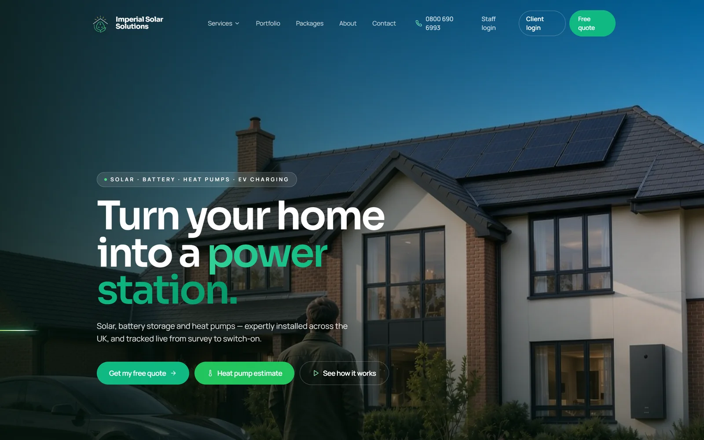

Renewables · UK-wide · Site + client portal
Imperial Solar Solutions
Solar, battery storage and heat pumps. The site had to sell a five-figure install to a homeowner who has never bought one before, so it leads with the outcome rather than the kit. Behind it sits a build tracker: engineers update a job from the van, and the customer watches their installation move from survey to switch-on without phoning anyone.